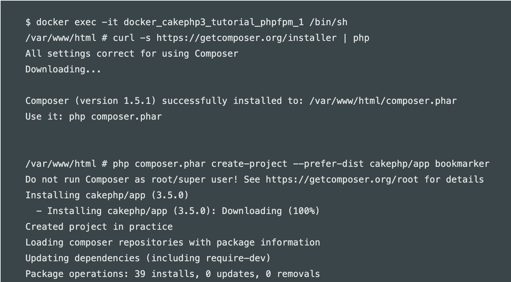

开发环境
使用Docker构建
本次使用Github公开的Dockerfile，利用docker-compose建立container.
使用的image是php:7-fpm-alpine
1.首先将上面的克隆到本地home
2.然后使用docker-compose命令进行构建
build的时候如果nginx存在的话会被跳过，需要确认的是这三个mysql、phpfpm、nginx有没有build成功。
3.然后创建Container
4.确认是否创建成功
5.启动Container，同时启动nginx服务器
注意：如果之前有创建过Container，并存在nginx container的时候，端口号重复所以会出现错误。此时应该停止Container然后再重复以上步骤。
6.然后Cakephp的composer装入phpfpm Container并安装。同时完成项目的创建。

7.安装和项目构建完成后，退出Container
8.启动服务器，就能看到确认画面了！
如果服务器版本不对则可能出现错误。此时需要brew在本地进行安装。
因为版本不同安装的东西也不同所以要进入Container里对php的版本进行确认。

版本为7.18，所以要安装php71-intl。

再启动服务器就能看到启动画面了。
通过此链接确认画面 http://localhost:8765/
数据库连接
有时数据库无法连接上，则采用下面的方法进行确认：
本地数据库连接方法：
1. 确认启动中的Container
1 | $ docker ps |
2. 找到启动中的mysql Container
确认到host为127.0.0.1,port为33061
259d8b05f8ec mysql:5.6 ... 127.0.0.1:3306->3306/tcp
3. 修改参数
cakephp的app.php的database改成「localhost」-> 「127.0.0.1」
docker-compose.yml里的database的port改成相应的33061
2
3
4
5
6
7
8
9
10
11
12
13
14
15
16
17
18services:
mysql:
restart: always
build: ./data/mysql/
volumes:
- "./data/mysql/db:/var/lib/mysql"
environment:
MYSQL_ROOT_PASSWORD: password
MYSQL_USER: my_app
MYSQL_PASSWORD: secret
MYSQL_DATABASE: my_app
TZ: "Asia/Tokyo"
ports:
- "3306:3306"
nginx:
restart: always
~~~~~~~~~~~~~~~
- 重新启动
1
2$ docker-compose down
$ docker-compose up -d
已存在数据库连接方法：
1.修改以下文件
app.php1
'host' => 'xxxxx'(你的数据库host),
docker-compose.yml1
2
3
4
5
6
7
8environment:
MYSQL_ROOT_PASSWORD: xxxx(你的数据库的密码)
MYSQL_USER: xxxx（你的登陆用户名）
MYSQL_PASSWORD: xxxx(你的数据库的密码)
MYSQL_DATABASE: xxxx（你的数据库名字）
TZ: "Asia/Tokyo"
ports:
- "3306:3306"
- 进入mysql Container，确认是否已经连接上
1
docker exec -it mysqlコンテナ名 sh
- 重新启动
1
2$ docker-compose down
$ docker-compose up -d
途中可能会出现下面的问题
问题1:
1 | ➜ ~ brew install homebrew/php/php71-intl |
解决方法:1
2
3
4
5
6
7
8
9
10
11
12
13
14
15# Save all old configurations, so the new packaes can recreate their versions -- eases the migration
mv /usr/local/etc/php $HOME/old-brew-php
# Uninstall ALL php related Packages (most of them homebrew/php related)
brew list | grep php | xargs brew uninstall --force
# Remove deprecated tap
brew untap homebrew/php
# Clean cache
brew cleanup
# Ensure latest brew repo HEAD
brew update
# Install latest php (php 7.2)
brew install php
pecl install xdebug
# Now copy & paste specific conf.d from your old-brew-php version if needed
# after that you may dispose of the old-brew-php folder
使用下面进行确认1
2
3
4
5
6
7brew list | grep php:
php php71
brew tap:
homebrew/bundle homebrew/core homebrew/dupes homebrew/php homebrew/services homebrew/versions
然后再安装1
brew install php@7.1
最后composer install再启动服务器就好了
问题2:
1 | E: Failed to fetch http://deb.debian.org/debian/dists/stretch/main/binary-amd64/Packages Error writing to output file - write (28: No space left on device) Error writing to file - write (28: No space left on device) |
解决方法：
空间不足无法启动的情况，可以将所有的Container和Image都删除，再启动
删除所有的Container
1
docker rm -f $(docker ps -aq)
删除所有的Images
1
docker rmi -f $(docker images -q)
删除所有的docker volume
1
docker volume rm -f $(docker volume ls -q)
重新启动
1
2$ docker-compose down
$ docker-compose up -d